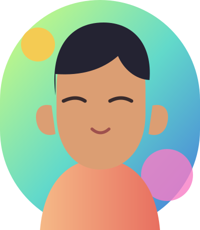

Selected work (06)
A LITTLE ABOUT METhoughtful design.
Thoughtful design.
Human at heart.

S. / 01I’m Subrata, an independent graphic designer based in Dhaka, Bangladesh.
I turn ideas into expressive visual identities, illustrations, posters, and digital experiences. I enjoy exploring color, shape, and storytelling to make work that feels clear, considered, and full of character.
Every project starts with listening, curiosity, and a little room to experiment. The best results come from good collaboration and care for the details.
BASED INDhaka, Bangladesh
FOCUSIllustration · Identity · Posters · Digital
APPROACHCurious, collaborative, detail-led